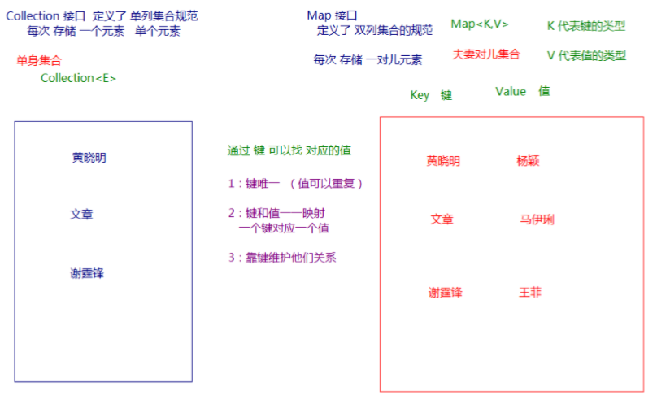

Map接口概述:
现实生活中，我们常会看到这样的一种集合：IP地址与主机名，身份证号与个人，系统用户名与系统用户对象等， 这种一一对应的关系，就叫做映射。Java提供了专门的集合类用来存放这种对象关系的对象，即 java.util.Map 接口
Map接口与Collection接口的区别:

Collection 中的集合，元素是孤立存在的（可以理解为单身），向集合中存储元素采用一个个元素的方式存储。
Map 中的集合，元素是成对存在的(可以理解为夫妻)。每个元素由键与值两部分组成，通过键可以找对所对应的 值。
Collection 中的集合称为单列集合， Map 中的集合称为双列集合。
需要注意的是，Map 中的集合不能包含重复的键，值可以重复；每个键只能对应一个值。
Map常用子类:
HashMap：存储数据采用的哈希表结构，元素的存取顺序不能保证一致。由于要保证键的唯一、不重复，需 要重写键的hashCode()方法、equals()方法。
LinkedHashMap：HashMap下有个子类LinkedHashMap，存储数据采用的哈希表结构+链表结构。通过链 表结构可以保证元素的存取顺序一致；通过哈希表结构可以保证的键的唯一、不重复，需要重写键的 hashCode()方法、equals()方法。
Map接口中的常用方法
Map接口中定义了很多方法，常用的如下：
public V put(K key, V value) : 把指定的键与指定的值添加到Map集合中。
public V remove(Object key) : 把指定的键 所对应的键值对元素 在Map集合中删除，返回被删除元素的 值。
public V get(Object key) 根据指定的键，在Map集合中获取对应的值。
public Set<K> keySet() : 获取Map集合中所有的键，存储到Set集合中。
public Set<Map.Entry<K,V>> entrySet() : 获取到Map集合中所有的键值对对象的集合(Set集合)。
1 package demosummary.map;
2
3 import java.util.HashMap;
4 import java.util.Map;
5 import java.util.Set;
6
7 /**
8 * public V put(K key, V value) : 把指定的键与指定的值添加到Map集合中。
9 *
10 * public V get(Object key) 根据指定的键，在Map集合中获取对应的值。
11 *
12 * public V remove(Object key) : 把指定的键所对应的键值对元素在Map集合中删除，返回被删除元素的值。
13 *
14 * public Set<K> keySet() : 获取Map集合中所有的键，存储到Set集合中。
15 *
16 * public Set<Map.Entry<K,V>> entrySet() : 获取到Map集合中所有的键值对对象的集合(Set集合)。
17 */
18 public class MapMethods {
19 public static void main(String[] args) {
20 /**
21 * public V put(K key, V value) : 把指定的键与指定的值添加到Map集合中。
22 */
23 //创建map集合
24 HashMap<String, String> map = new HashMap<>();
25 //添加元素
26 map.put("蛮王", "艾希");
27 map.put("盖伦", "卡特琳娜");
28 map.put("卡牌", "寡妇");
29 //打印map集合
30 System.out.println(map);//{卡牌=寡妇, 蛮王=艾希, 盖伦=卡特琳娜}
31
32 /**
33 * public V get(Object key) 根据指定的键，在Map集合中获取对应的值。
34 */
35 String result = map.get("蛮王");
36 System.out.println(result);//艾希
37
38 /**
39 * public V remove(Object key) : 把指定的键所对应的键值对元素在Map集合中删除，返回被删除元素的值。
40 */
41 String result1 = map.remove("蛮王");
42 System.out.println(result1);//艾希
43 System.out.println(map);//{卡牌=寡妇, 盖伦=卡特琳娜}
44
45 /**
46 * public Set<K> keySet() : 获取Map集合中所有的键，存储到Set集合中。
47 */
48 Set<String> set = map.keySet();
49 System.out.println(set);//[卡牌, 盖伦]
50
51 /**
52 * public Set<Map.Entry<K,V>> entrySet() : 获取到Map集合中所有的键值对对象的集合(Set集合)。
53 */
54 Set<Map.Entry<String, String>> set1 = map.entrySet();
55 System.out.println(set1);//[卡牌=寡妇, 盖伦=卡特琳娜]
56
57 }
58 }注意:使用put方法时，若指定的键(key)在集合中没有，则没有这个键对应的值，返回null，并把指定的键值添加到 集合中；若指定的键(key)在集合中存在，则返回值为集合中键对应的值（该值为替换前的值），并把指定键所对应的值，替换成指定的新值。
Map集合遍历键找值方式
键找值方式：即通过元素中的键，获取键所对应的值
分析步骤：
1. 获取Map中所有的键，由于键是唯一的，所以返回一个Set集合存储所有的键。方法提示: keyset()
2. 遍历键的Set集合，得到每一个键。
3. 根据键，获取键所对应的值。方法提示: get(K key)
1 package demosummary.map;
2
3 import java.util.HashMap;
4 import java.util.Set;
5
6 public class MapFor {
7 /**
8 * 键找值方式：即通过元素中的键，获取键所对应的值
9 * 分析步骤：
10 * 1. 获取Map中所有的键，由于键是唯一的，所以返回一个Set集合存储所有的键。方法提示: keyset()
11 * 2. 遍历键的Set集合，得到每一个键。
12 * 3. 根据键，获取键所对应的值。方法提示: get(K key)
13 */
14 public static void main(String[] args) {
15 //创建map集合
16 HashMap<String, String> map = new HashMap<>();
17 //添加元素
18 map.put("蛮王", "艾希");
19 map.put("德玛", "卡特琳娜");
20 map.put("卡牌", "寡妇");
21 //获取键
22 Set<String> keys = map.keySet();
23 //遍历键
24 for (String key : keys) {
25 //通过键获取值
26 String s = map.get(key);
27 System.out.println(s);
28 /**
29 * 运行结果
30 * 寡妇
31 * 卡特琳娜
32 * 艾希
33 */
34 }
35 }
36 }Entry键值对对象
我们已经知道， Map 中存放的是两种对象，一种称为key(键)，一种称为value(值)，它们在在 Map 中是一一对应关 系，这一对对象又称做 Map 中的一个 Entry(项) 。 Entry 将键值对的对应关系封装成了对象。即键值对对象，这 样我们在遍历 Map 集合时，就可以从每一个键值对（ Entry ）对象中获取对应的键与对应的值。
方法:
public K getKey() ：获取Entry对象中的键。
public V getValue() ：获取Entry对象中的值。
在Map集合中也提供了获取所有Entry对象的方法：
public Set<Map.Entry<K,V>> entrySet() : 获取到Map集合中所有的键值对对象的集合(Set集合)。
操作步骤与图解：
1. 获取Map集合中，所有的键值对(Entry)对象，以Set集合形式返回。方法提示: entrySet() 。
2. 遍历包含键值对(Entry)对象的Set集合，得到每一个键值对(Entry)对象
3. 通过键值对(Entry)对象，获取Entry对象中的键与值。 方法提示: getkey() getValue()
1 package demosummary.map;
2
3 import java.util.HashMap;
4 import java.util.Map;
5 import java.util.Set;
6
7 public class MapEntry {
8 public static void main(String[] args) {
9 //创建map集合
10 HashMap<String, String> map = new HashMap<>();
11 //添加元素
12 map.put("蛮王", "艾希");
13 map.put("德玛", "卡特琳娜");
14 map.put("卡牌", "寡妇");
15 //获取entry对象
16 Set<Map.Entry<String, String>> entrySet = map.entrySet();
17 //遍历得到entry对象
18 for (Map.Entry<String, String> es : entrySet) {
19 String key = es.getKey();
20 String value = es.getValue();
21 System.out.println(key + "的CP是" + value);
22 /**
23 * 执行结果
24 * 卡牌的CP是寡妇
25 * 德玛的CP是卡特琳娜
26 * 蛮王的CP是艾希
27 */
28 }
29 }
30 }HashMap存储自定义类型键值
1 package demosummary.map;
2
3 import java.util.HashMap;
4 import java.util.Objects;
5 import java.util.Set;
6
7 public class MapStudent {
8 private String name;
9 private Integer age;
10
11 public MapStudent() {
12 }
13
14 public MapStudent(String name, Integer age) {
15 this.name = name;
16 this.age = age;
17 }
18
19 public String getName() {
20 return name;
21 }
22
23 public void setName(String name) {
24 this.name = name;
25 }
26
27 public Integer getAge() {
28 return age;
29 }
30
31 public void setAge(Integer age) {
32 this.age = age;
33 }
34
35 @Override
36 public boolean equals(Object o) {
37 if (this == o) return true;
38 if (o == null || getClass() != o.getClass()) return false;
39 MapStudent that = (MapStudent) o;
40 return Objects.equals(name, that.name) &&
41 Objects.equals(age, that.age);
42 }
43
44 @Override
45 public int hashCode() {
46 return Objects.hash(name, age);
47 }
48
49 @Override
50 public String toString() {
51 return "MapStudent{" +
52 "name='" + name + '\'' +
53 ", age=" + age +
54 '}';
55 }
56
57 public static void main(String[] args) {
58 //创建HashMap集合对象
59 HashMap<MapStudent, String> map = new HashMap<>();
60 //添加元素
61 map.put(new MapStudent("A", 20),"北京");
62 map.put(new MapStudent("B", 21),"上海");
63 map.put(new MapStudent("C", 22),"深圳");
64 map.put(new MapStudent("D", 20),"广州");
65 //获取keySet对象
66 Set<MapStudent> ms = map.keySet();
67 //遍历得到的Key
68 for (MapStudent m : ms) {
69 String s = map.get(m);
70 System.out.println(s);
71 }
72 /**
73 * 执行结果
74 * 广州
75 * 北京
76 * 上海
77 * 深圳
78 */
79 }
80 }LinkedHashMap
LinkedHashMap可以保证存进去的元素有序,因为在HashMap下面有一个子类LinkedHashMap，它是链表和哈希表组合的一个数据存储结构
1 package demosummary.map;
2
3 import java.util.LinkedHashMap;
4 import java.util.Map;
5 import java.util.Set;
6
7 public class LinkedMapDemo {
8 public static void main(String[] args) {
9 //创建LinkedHashMap集合
10 LinkedHashMap<String, String> map = new LinkedHashMap<>();
11 //添加元素
12 map.put("蛮王", "艾希");
13 map.put("德玛", "卡特琳娜");
14 map.put("卡牌", "寡妇");
15 //获取entrySet对象
16 Set<Map.Entry<String, String>> me = map.entrySet();
17 //遍历获取的键
18 for (Map.Entry<String, String> sse : me) {
19 System.out.println(sse.getKey()+"=="+sse.getValue());
20 }
21 /**
22 * 执行结果
23 * 蛮王==艾希
24 * 德玛==卡特琳娜
25 * 卡牌==寡妇
26 */
27 }
28 }